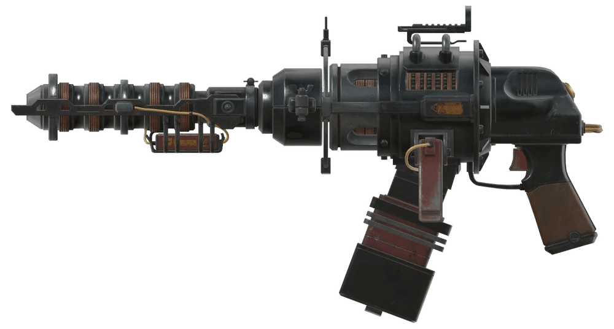
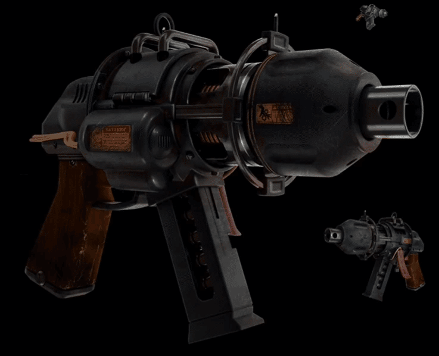

ガウスピストル
ガウスピストルは、Fallout 76 のアップデート「Wastelanders」で導入された遠距離武器です。
背景
ドイツで設計された PPK12 ガウスピストルは、ガウスライフルのハンドヘルド版の代替品です。
完全にチャージされると、2mm電磁カートリッジが電磁コイルに沿って加速され、遠距離のターゲットに対しても圧倒的な阻止力を維持するのに十分な力で放たれます。
有能な射手の手に渡れば、最も強固なアーマーを除くほぼすべての装甲を貫通することが可能です。
特性
ガウスピストルは、同クラスの他の武器と比較して優れた射程と弾薬容量を持つ強力なサイドアームです。
大型のガウスライフルと同様に、トリガーを押し続けてチャージすることで、より強力な弾丸を放つことができます。
作成時にはレジェンダリーモジュールを使用するため、ランダムな効果を持つレジェンダリー武器として生成されます。
Wastelanders のメインクエスト完了後に入手可能になる他の武器と同様に、ガウスピストルは取引、ドロップ、またはベンダーへの売却ができません。
作成
武器作業台で作成可能です。
作成には「設計図：ガウスピストル」を習得している必要があります。
パッチ1.7.14.15以降、レベルを選択して作成できるようになりました。
場所
設計図は、Wastelanders のメインクエストラインを完了した後、Vault 79 にいるレグスから250金塊で購入できます。
または、メインクエスト完了前にミネルヴァから同価格で購入できる場合もあります。
設計図を習得した後は、クエスト報酬や作成を通じてレジェンダリー武器として入手可能です。
武器の改造
ガウスピストルの改造設計図は、すべてレグスから金塊で購入する必要があります。
ガウスピストルを解体しても改造を習得することはできません。
レシーバー
標準レシーバーの他に、ダメージを増加させる「ハードレシーバー」、スコーチへのダメージが増加しウルトラサイト弾を使用する「プライムレシーバー」、命中精度を高める「リファインレシーバー」、クリティカルダメージを大幅に強化する「ビシャスレシーバー」などが存在します。
バレル
反動を抑え命中精度を高める「整列済みショートバレル」、消音効果を付与する「サプレッサー付きバレル」などが装着可能です。
マガジン
装弾数を50%増加させる「ドラムマガジン」が選択可能です。
照準器

標準の照準器の他に、「標準発光照準器」や「リフレックスサイト」を装着して命中精度や視認性を向上させることができます。
注記
ガウスピストルは実弾武器とエネルギー武器の両方としてカウントされるため、ボブルヘッドの「Small Guns」と「Energy Weapons」の両方の効果を受けます。
また、変異「絶縁体」の影響を受けます。
チャージせずに発射（タップ撃ち）した場合、ダメージは最大50%まで減少します。
パッチ1.7.14.15以降、レジェンダリー効果の「爆発」をすべてのガウス武器に付与できるようになり、固有の爆発効果と累積して合計35%の爆発ダメージを与えることが可能です。
舞台裏
この武器とその改造は Joon Choi によってコンセプトデザインされ、Fallout 2 に登場したガウスピストルを再現したものです。
ドラムマガジンは、2mm電磁カートリッジを排出する際に回転するように設計されており、赤いドットで残弾状況を示すギミックが想定されていました。
バグ
タップ撃ちを繰り返すと、チャージしているように見えるが実際にはチャージされていないロックアウト状態に陥ることがあります。
この状態ではダッシュやスティムパックの使用ができなくなりますが、武器の持ち替えやバッシュで修正可能です。
また、一人称視点において爆発効果が発射速度を低下させる現象が確認されています。
登場作品
ガウスピストル は Fallout 76 にのみ登場します。
ハイテク・サイドアームの極致: ガウスライフルの威力をピストルサイズに凝縮したという背景は、ピストルビルドを好む居住者にとって非常に魅力的な設定ですね。
爆発効果の累積: 固有の爆発ダメージに加えてレジェンダリーの爆発効果が乗るようになった点は、現在の環境において非常に高い火力を期待できる武器と言えます。
操作上の癖: チャージメカニズムや、バグによるロックアウト現象など、使いこなすには独特の習熟が必要な点も、ガウス武器らしい「気難しさ」を感じさせます。

This article was created by translating and editing Gauss Pistol from Nukapedia: The Fallout Wiki.
Licensed under the Creative Commons Attribution-Share Alike License (CC BY-SA 3.0).
コミュニティ維持のため、寄付を受け付けております。
> COMMENTS